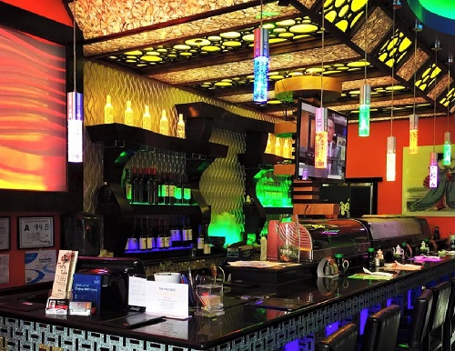
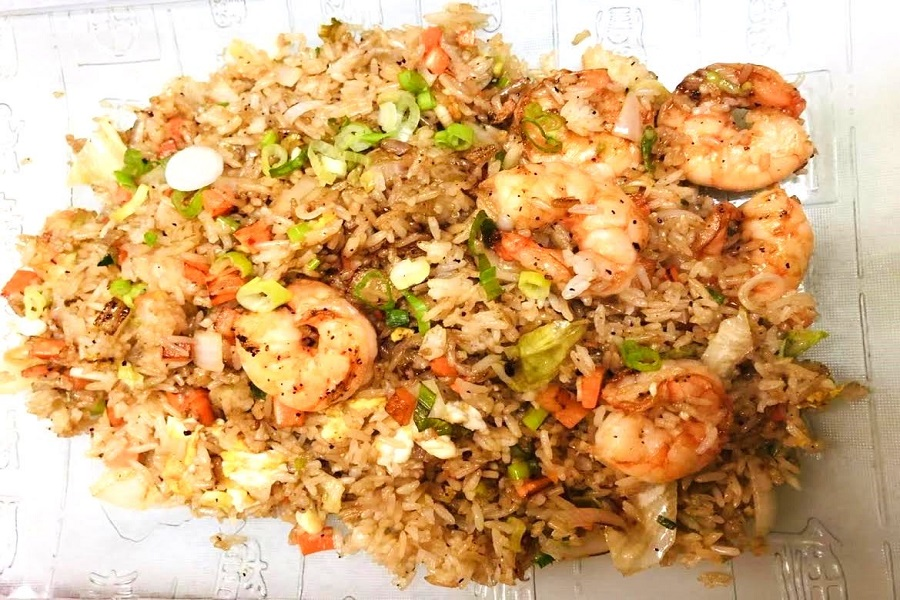
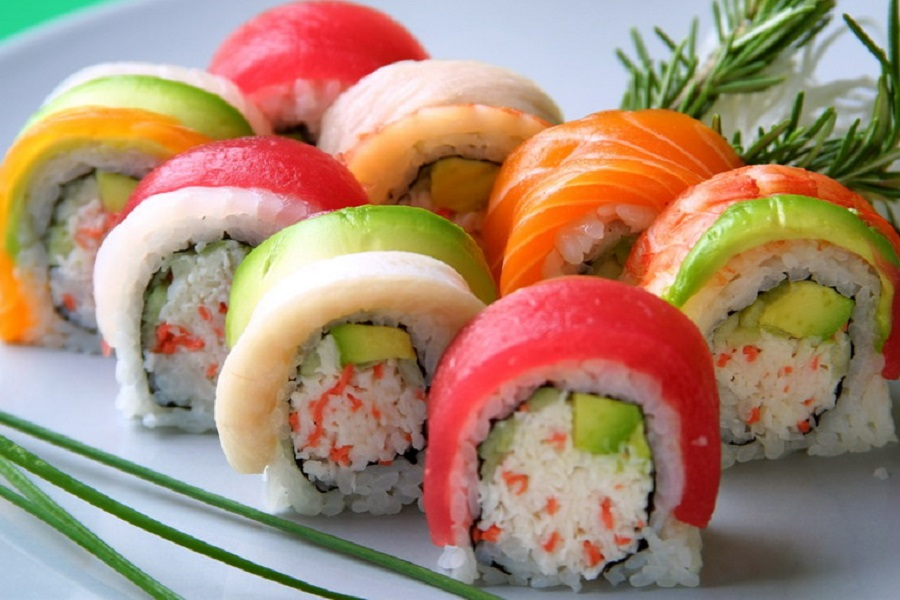

Operating Schedule
- Monday – Thursday: 11:00 AM – 9:30 PM
- Friday – Saturday: 11:00 AM – 10:00 PM
- Sunday: 4:30 PM – 9:30 PM
- Dine-in seating & carryout available during all open hours.
Tin Tin Café welcomes you seven days a week for casual dining in our quiet neighborhood dining room or convenient takeout pickup. Call ahead to have your favorite hibachi combinations and fresh sushi rolls packed hot and ready.

Address:
3020 Driwood Court
Charlotte, NC 28269
University City / North Charlotte
Phone: (704) 488-1882
Alt: (980) 207-4523
Options: Comfortable booth and table dine-in seating, fast phone pickup, and online ordering through Grubhub, DoorDash, and Uber Eats. Free surface parking directly in front of the store.
Short on time? Order your hibachi steak, chicken yaki udon, or specialty sushi rolls over the phone for rapid carryout:


Planning an event or campus gathering in University City? Let Tin Tin Café cater your occasion: